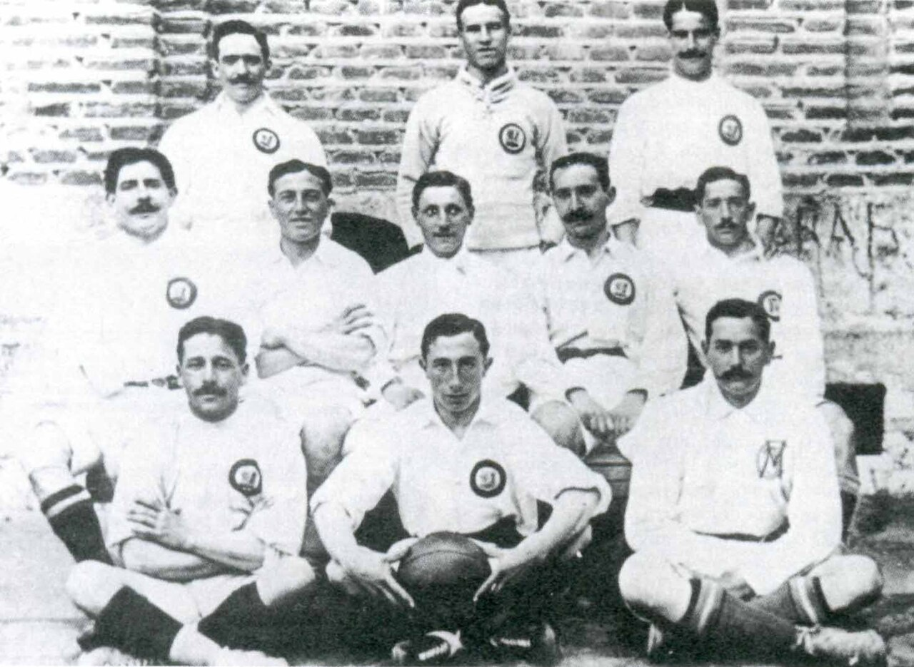

Real Madrid

Nuestra Historia
El Real Madrid Club de Fútbol, más conocido simplemente como Real Madrid, es una entidad
polideportiva con sede en Madrid (España). Fue registrada oficialmente como club de fútbol por sus
socios el 6 de marzo de 1902 con el objeto de la práctica y desarrollo de este deporte, si bien sus
orígenes datan del año 1900, y su denominación de (Sociedad) Madrid Foot-ball Club de octubre de
1901, siendo el quinto club fundado en la capital. Tuvo a Julián Palacios y los hermanos Juan
Padrós y Carlos Padrós como principales valedores de su creación. La entidad adquirió su
designación actual el 29 de junio de 1920 mediante el otorgamiento del título honorífico de «Real»
por parte de su majestad el rey Alfonso XIII de España, quien también conferiría la distinción
visual correspondiente incorporando la corona real en su emblema.
Identificado por su color blanco (del que recibe el apelativo de «blancos» o «merengues»), es uno de los cuatro clubes profesionales de fútbol del país cuya entidad jurídica no es la de sociedad anónima deportiva (S. A. D.),n. ya que su propiedad recae en sus más de 90 000 socios. Otra salvedad comparte con el Athletic Club y el Fútbol Club Barcelona al participar sin interrupción en la máxima categoría de la Liga Nacional de Fútbol Profesional, la Primera División de España, desde su establecimiento en 1929. En ella posee los honores de haber sido el primer líder histórico de la competición, el de equipo con más títulos, y el de la máxima puntuación en una sola edición
Abocado desde sus inicios al desarrollo del balompié, pronto adquirió un carácter multideportivo y desarrolló varias otras disciplinas que fueron desapareciendo con el devenir de los años,1920 a excepción de la sección de baloncesto, denominada Real Madrid Baloncesto. Hubo varias especulaciones en la historia reciente de la entidad sobre la posibilidad de recuperar algunas de ellas como la sección de balonmano, o la sección de rugby que no llegaron a materializarse,n. al contrario que una sección femenina de fútbol, parcela que desde los años 2010 el club trabajaba por crear con una base desde el ciclo formativo hasta la máxima categoría. Finalmente en 2019, y tomando otra de las posibles vías para su creación, se produjo la fusión por absorción del Club Deportivo TACON aprobándose en una reunión extraordinaria por parte de los socios compromisarios y conformar así el Real Madrid Club de Fútbol femenino.
Identificado por su color blanco (del que recibe el apelativo de «blancos» o «merengues»), es uno de los cuatro clubes profesionales de fútbol del país cuya entidad jurídica no es la de sociedad anónima deportiva (S. A. D.),n. ya que su propiedad recae en sus más de 90 000 socios. Otra salvedad comparte con el Athletic Club y el Fútbol Club Barcelona al participar sin interrupción en la máxima categoría de la Liga Nacional de Fútbol Profesional, la Primera División de España, desde su establecimiento en 1929. En ella posee los honores de haber sido el primer líder histórico de la competición, el de equipo con más títulos, y el de la máxima puntuación en una sola edición
Abocado desde sus inicios al desarrollo del balompié, pronto adquirió un carácter multideportivo y desarrolló varias otras disciplinas que fueron desapareciendo con el devenir de los años,1920 a excepción de la sección de baloncesto, denominada Real Madrid Baloncesto. Hubo varias especulaciones en la historia reciente de la entidad sobre la posibilidad de recuperar algunas de ellas como la sección de balonmano, o la sección de rugby que no llegaron a materializarse,n. al contrario que una sección femenina de fútbol, parcela que desde los años 2010 el club trabajaba por crear con una base desde el ciclo formativo hasta la máxima categoría. Finalmente en 2019, y tomando otra de las posibles vías para su creación, se produjo la fusión por absorción del Club Deportivo TACON aprobándose en una reunión extraordinaria por parte de los socios compromisarios y conformar así el Real Madrid Club de Fútbol femenino.
Antecedentes y origen confuso

Julián Palacios
Primer presidente del Real Madrid en 1902.
Tras los primeros protoclubes de foot-ball surgidos en Madrid a finales del siglo xix, un grupo de jóvenes y antiguos integrantes de la Institución Libre de Enseñanza (ILE) formaron en 1897 un equipo que resultó ser el antecesor de la entidad madridista, la Sociedad de Foot-Ball, la primera surgida en la región para la exclusiva práctica de un deporte llegado de Inglaterra y que, por diversas circunstancias, terminara sufriendo una escisión en octubre del año 1900. Las insuficientes y poco correctas crónicas de la época no permiten esclarecer con certeza lo que ocurrió hasta 1902. Existen dos hipótesis al respecto. La primera indica que se dividió en dos clubes, Nueva Sociedad de Foot-Ball y (Sociedad) Sky Foot-Ball, que se fusionarían en 1901 para dar origen a la (Sociedad) Madrid Foot-Ball Club. La otra hipótesis y posiblemente la más probable según las crónicas, dice que acabaría en 1901 con una reestructuración de esta Nueva Sociedad surgida en noviembre de 1900 para denominarse (Sociedad) Madrid Foot-Ball Club tras unírsele algunos integrantes de la Sociedad primera. Se puede pues afirmar que en 1901 adoptó el nombre que le acompañó en adelante, sin poder verificar su fundación en ese año o en uno anterior, y su legalización concluyó en 1902 como fecha que figura en sus registros. Las fuentes citan a Julián Palacios como primer presidente de la Nueva Sociedad, y después del Madrid F. C. (fuera o no el mismo club)
Apenas unas cuantas decenas de socios formaban la entidad debido a la poca extensión del fútbol en el país, deporte que no poseía aún recintos propios o debidamente conformados para su práctica. Por ello los entusiastas équipiersn. se repartían por diferentes descampados y zonas de la ciudad como el Campo del Retiro,heredado del Sky Foot-Ball. El primer partido del equipo del que se tiene constancia data del 6 de octubre de 1901 en la citada localización.
En la Junta General Extraordinaria celebrada el 6 de marzo de 1902 fueron aprobados sus primeros estatutos tal y como se instaba a los clubes futbolísticos por el Real Decreto del Gobierno del 19 de septiembre de 1901 para su regularización e inscripción en el Registro de Asociaciones, siendo así la fecha fundacional a efectos oficiales. Los integrantes eligieron a sus primeros dirigentes, encabezados por Juan Padrós como primer presidente electo y Enrique Varela como vicepresidente. Además de acordar el objeto y reglamento de la sociedad o el uniforme del equipo.
Crecimiento como institución. Un club «Real»

La conclusión del certamen nacional llevó a un crecimiento institucional, iniciado con incorporaciones de jugadores a una plantilla entre la que destacaba el conocimiento del juego de su integrante británico Arthur Johnson. Su implicación con el desarrollo del foot-ball madrileño y español, y la falta de una estamento federativo nacional, hizo que la Union des Sociétés Françaises de Sports Athlétiques (USFSA) le citase como representante del país al primer Congreso de Foot-Ball Association del 21 de mayo de 1904. En él fue, junto a otras seis federaciones, miembro fundador de la Federación Internacional de Fútbol Asociación (en francés: Fédération Internationale de Football Association - FIFA).
Cumplido el primer lustro de siglo germinaron en la capital numerosos equipos de balompié que acrecentaron la competencia, motivo por el que el club absorbió al Moderno Foot-Ball Club, a la Association Sportive Amicale, y en 1907 al Moncloa Foot-Ball Club para cubrir las bajas ante la dimisión de algunos de sus integrantes para fundar el Club Español de Madrid y el Athletic Club (Sucursal de Madrid). Este último fue un equipo filial en Madrid del club bilbaíno del Athletic Club, su primer rival reconocido, que derivó en el actual Atlético de Madrid. Mientras, Carlos Padrós fue nombrado presidente sustituyendo a su hermano Juan y concentró sus tareas como dirigente en el crecimiento social a nivel de club, y federativo a nivel regional.
La conclusión del certamen nacional llevó a un crecimiento institucional, iniciado con incorporaciones de jugadores a una plantilla entre la que destacaba el conocimiento del juego de su integrante británico Arthur Johnson. Su implicación con el desarrollo del foot-ball madrileño y español, y la falta de una estamento federativo nacional, hizo que la Union des Sociétés Françaises de Sports Athlétiques (USFSA) le citase como representante del país al primer Congreso de Foot-Ball Association del 21 de mayo de 1904. En él fue, junto a otras seis federaciones, miembro fundador de la Federación Internacional de Fútbol Asociación (en francés: Fédération Internationale de Football Association - FIFA).
Cumplido el primer lustro de siglo germinaron en la capital numerosos equipos de balompié que acrecentaron la competencia, motivo por el que el club absorbió al Moderno Foot-Ball Club, a la Association Sportive Amicale, y en 1907 al Moncloa Foot-Ball Club para cubrir las bajas ante la dimisión de algunos de sus integrantes para fundar el Club Español de Madrid y el Athletic Club (Sucursal de Madrid). Este último fue un equipo filial en Madrid del club bilbaíno del Athletic Club, su primer rival reconocido, que derivó en el actual Atlético de Madrid. Mientras, Carlos Padrós fue nombrado presidente sustituyendo a su hermano Juan y concentró sus tareas como dirigente en el crecimiento social a nivel de club, y federativo a nivel regional.